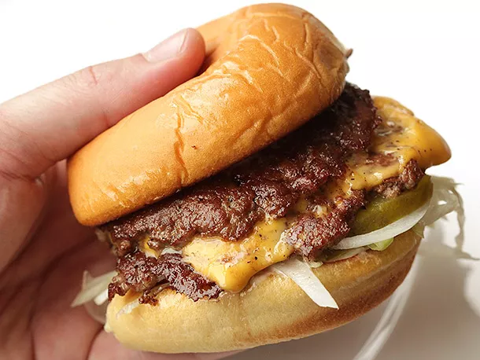

Ultra Smashed Cheeseburger

I'm on my journey to find the best cheeseburger in Singapore, but most of them are too expensive
So I thought, why not make my own?
Ingredients
- 1 soft hamburger roll, buttered and toasted
- Condiments (e.g. Lettuce, Tomatoes, Mayonnaise)
- Kosher salt and freshly ground black pepper
- 1 slice of good melting cheese, such as American, Cheddar
Steps
- Prepare burger bun by laying toppings on bottom half of bun. Have it nearby and ready for when your burger is cooked.
- Preheat a large stainless steel sauté pan or skillet over high heat for 2 minutes. Place balls of beef in pan and smash down with a stiff metal spatula, using a second spatula to add pressure. Smashed patties should be slightly wider than burger bun.
- Season generously with salt and pepper and allow to cook until patties are well browned and tops are beginning to turn pale pink/gray in spots, about 45 seconds. Using a bench scraper or the back side of a stiff metal spatula, carefully scrape patties from pan, making sure to get all of the browned bits.
- Flip patties and immediately place a slice of cheese over 1 patty, then stack the second directly on top. Immediately remove from pan and transfer to waiting burger bun. Serve.
NOTE: These burgers cook very fast, so it's best to make them one at a time. If making multiple burgers, keep them warm under a tent of foil while preparing subsequent burgers.
Back